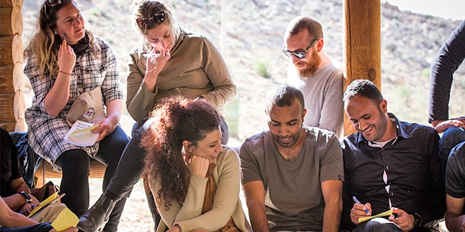
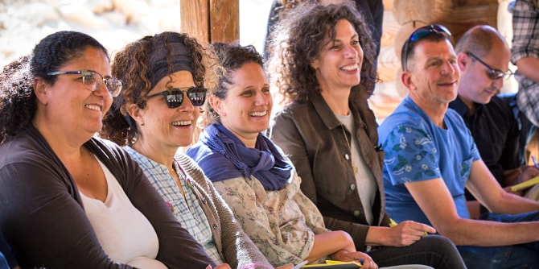

The fellows of the Mandel Program for Local Leadership in Eilat-Eilot, the Mandel Program for Local Leadership in Kseifa and Arara BaNegev, and the Mandel Program for Cultural Leadership in the Negev came together for a day of joint study in Mitzpe Ramon.
The purpose of the gathering was to give the fellows of this year’s programs an opportunity to meet one another, and to create opportunities for networking dialogue about local leadership issues, in order to strengthen the community of Mandel fellows working to effect change in the varied communities of the Negev.
The day-long study seminar took place in Mitzpe Ramon, which can serve as a case study for local issues in education, tourism and the environment, culture, community, and social welfare. The geographic isolation and socioeconomic status of Mitzpe Ramon demand that the city takes steps to grow while facing many challenges. In recent years, young leaders have emerged who seek to create, rejuvenate, and have a positive influence on the community, as it absorbs young families, artists, and entrepreneurs who see it as a place of inspiration and growth.

At the start of the day, Dr. Adi Nir-Sagi, the director of the Center, quoted Professor Alexander Haslam, a researcher on leadership whose studies pay particularly attention to the group, in which an individual influences the other members of the group in order to accomplish goals that are based on a social vision. According to Professor Alexander, the social identity of “we” is powerful and effects change. In the case of the Mandel Center for Leadership in the Negev, the “we” comprises the fellows of the various programs, who aspire to improve quality of life in the Negev by working together.
The session continued with a workshop facilitated by
Professor Smadar Ben-Asher, which aimed to introduce the groups of fellows to one another by creating a shared frame story by combining individual life stories that each fellow chose to share with the group. Next, the fellows met with
Roni Marom, Mayor of Mitzpe Ramon, who presented the work he has been doing in the community and the vision that forms the basis of his work over the next several years. As part of his urban vision, he hopes to turn Mizpe Ramon into a place of inspiration, based on values of pioneering and creativity, in order to improve the residents’ quality of life and attract new populations.

Later in the day, the fellows went on a walking tour and studied in four small groups led by local entrepreneurs and activists in order to learn about the various projects and the special work that is being done in Mitzpe Ramon. These study groups focused on education, culture, tourism, the environment, and social enterprises. Group leaders included entrepreneur and educator Ziv Spector, founder and director of the Desert Shade eco-camp (Tzel Midbar); Adar Maayan Stern, a social activist who works with issues relating to the environment, local economy, and sustainability; and Moshik Wolf, the director of the Asher Ruach Bo pre-army preparatory program. The fourth group focused on culture and met with Shiri Bar-On, the director of the CineMakhtesh and a fellow of the Mandel Program for Cultural Leadership in the Negev, and with Ehud Ettun, a leading music educator in the community. Through the walking tours, each group learned about the effort necessary for effecting change in the challenging conditions of a small, geographically remote community.
At the end of the day, the fellows gathered in the forest at the outskirts of Mitzpe Ramon for a workshop on experiential dance. They then processed the day, in a session led by fellows of the program.
This study day served as the basis for powerful, high-quality teamwork for the benefit of all who live in the Negev.

{kind=link}
{kind=link}